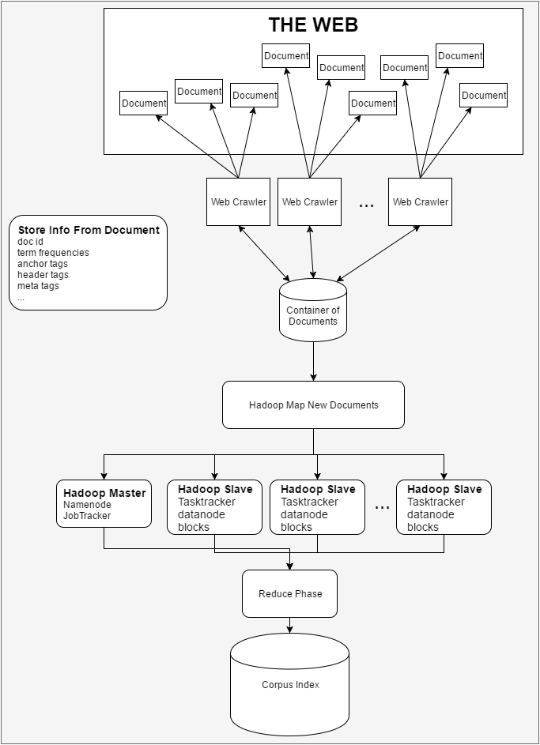

Jacob Armentrout
Aspiring Software Engineer
Hello!!!
My name is Jacob Armentrout and I'm a Computer Science student at the University of California Irvine
How I fell in love with Computer Science
After high school I worked as a technician at Western Digital. There, I was able to get hands on experience with real hardware and work with professional engineers. To me, this was the experience of a lifetime. The best part were the people I worked with. I was humbled by their patience training me and sought to pay them back by learning as much and as quick as I could.
One day, I finished a task early and asked the engineer I worked with if they could show me some "programming". He showed me a helloworld.java program and I still remember how my ears perked when the console printed "Hello World!". It sparked the most curious facination within myself that I never really felt toward any other subject. My life completely changed. It was like building with legos for the first time. I could snap a few of those colorful pieces together to make a larger piece. Then snap a few more together to build... literally anything my imagination could think of. I've been hooked every since.
My work ethic
I have had a mixture of full/part time jobs since I was 18. This was out of necessity so I can independently support myself in school (with the help of financial aid provided by UCI). Because of monetary constraints, I have consistently worked 20 hours/week during each of my 4 years at UCI as well as maintaining around 16 units worth of classes. This was not easy. I've had to make many sacrafices but I still strive to get an A in every Computer Science class I take. With so little time, the things I do spend my free time on are the things that I am the most passionate about. I work hard at school, work, and in the projects I do in my free time.
Things I'm interested in academically
- Hadoop
- Computational Geometry
- Software Design
- Web Design
- DIY Projects
- iOS App Development
- Web App Development
Favorite pastimes
My Big Ideas!
1. The goal for this overall project is to deploy a website that can execute a sequence of jobs over a cluster of machines using Hadoop. I do not yet have all of the necessary skills to do this myself BUT I'm well on my way! I have mapped out a series of sub goals that are helping me accomplish this task.
- Build a small computational geometry site in Django to calculate a single job
- Build a FULL tutorial site in Tomcat so I can share the procedure I follow with the world and familiarize myself with Java servlets
- Set up Hadoop and execute the starter example (word frequency over Shakespear plays)
- Write a tutorial on how to set up Hadoop on c9.io from start to finish
- Implement a site to take a single job and distribute it across multiple systems using Hadoop
- Allow the site to take a series of jobs (a job queue?)
* Will upload a diagram when I get the chance *
2. This project I am considering implementing a distributed search engine using Hadoop. This design would allow me to simultaneously add documents to index and query the index at the same time. I recently stumbled upon this article that suggests using Apache Lucene with Hadoop. I may switch to using this approach as opposed to implementing the system myself due to time constraints.
{kind=link}